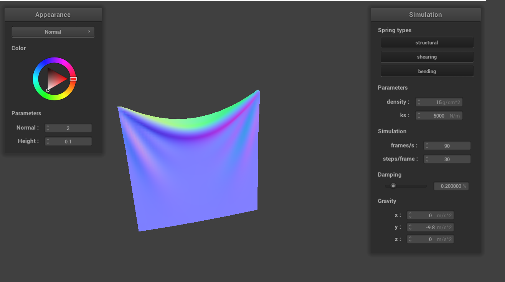

Overview
...overview: https://cal-cs184-student.github.io/hw-webpages-sp24-YuntingZh/hw2/index.html
Part 1: Masses and springs
Part 2: Simulation via numerical integration
Overview
What I did in Part 2:
Reset Forces:
Calculated the total external force on each point mass using external_accelerations
and the mass of the point mass, applying Newton's Second Law (F = ma) for external forces.
Spring Correction Forces:
Implemented these by verifying if the spring's constraint type is enabled
and then calculating the forces based on Hooke’s Law (F = -kx).Vector3D force =
ab.unit() * cp->ks * (current_length - spring.rest_length);
Verlet Integration for Position Computation:
Computed the new position of each point mass using
Verlet integration and included a damping coefficient.
Adjusting Positions for Spring Length Constraints:
Modified the positions of the point masses
associated with each spring to ensure the length does not exceed 110% of its rest length, skipping
over any pinned point masses.
Observations
Observations from Low to High ks: I noticed that with a smaller spring constant
ks, the cloth has more wrinkles. When ks is about 50, the cloth shows many small and fine wrinkles
but hardly any large ones. As ks increases, the cloth becomes stiffer. Setting an excessively high
value like 500,000, however, leads to erratic behavior and prevents the cloth from reaching a state
of static equilibrium.
I noticed that with a smaller spring constant
ks, the cloth has more wrinkles. When ks is about 50, the cloth shows many small and fine wrinkles
but hardly any large ones. As ks increases, the cloth becomes stiffer. Setting an excessively high
value like 500,000, however, leads to erratic behavior and prevents the cloth from reaching a state
of static equilibrium.
Observations from Low to High Density:
 A higher density value results in fewer
wrinkles, giving the cloth a taut appearance. Conversely, a very low density makes the cloth
resemble soft and lightweight materials like taffeta linings and gauzy fabric.
A higher density value results in fewer
wrinkles, giving the cloth a taut appearance. Conversely, a very low density makes the cloth
resemble soft and lightweight materials like taffeta linings and gauzy fabric.
Observations from Low to High Damping:
 Damping significantly influences the
bounciness of the cloth. The closer the damping is to 0, the more the cloth shakes and the longer it
oscillates. A higher damping value results in a calmer cloth movement.
Damping significantly influences the
bounciness of the cloth. The closer the damping is to 0, the more the cloth shakes and the longer it
oscillates. A higher damping value results in a calmer cloth movement.
In summary, a low ks results in a more flexible and wrinkled cloth, while a high ks leads to stiffness. Density impacts the cloth's response to gravity and external forces, and damping controls the duration of post-disturbance oscillations.
Here is the cloth in its default final resting state! 
Part 3: Handling collisions with other objects
In Part 3, I implemented collision handling for two primitives in the cloth simulation: spheres and planes. This enhancement adds a more dynamic and realistic behavior, allowing the cloth to interact naturally with these objects.
3.1: Handling collisions with spheres
The first task was to tackle collisions between the cloth and spherical objects. The approach was straightforward yet effective:
- Collision Detection: I calculated the distance from each PointMass to the center of a sphere to detect collisions.
- Intersection Point: I calculated the intersection point on the sphere's surface for each colliding PointMass.
- Correction Vector: This vector adjusted the PointMass's position to the sphere's surface.
- Friction Adjustment: I incorporated friction into the correction, enhancing realism.

Above are images of cloth with varying ks as they collide with the sphere. As ks increases, the cloth becomes stiffer.
3.2: Handling collisions with planes
Next, I focused on plane collisions:
- Collision Detection: Check if a PointMass crossed the plane since the last step.
- Intersection Point: Compute the intersection point for each PointMass that crossed the plane.
- Correction Vector: Adjust the correction vector with a small offset to avoid sticking to the plane.
- Friction Adjustment: Friction was applied to the correction vector for realism.

Integrating these methods into the Cloth::simulate function ensured realistic interactions between the cloth and other objects. The cloth now appropriately drapes over spheres and reacts to planes in the environment.
Part 4: Handling self-collisions
Overview
...
Part 5: Cloth Sim
Overview
...